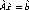
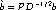
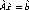
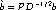

Example
A simple example involving math.
Simple math a + b Less simple (braces) { a + b } And with ldots Foo( a + b + ... ) Even worse, with subscripts and superscripts A1 + B2 = Cold
Here is a block of text that caused some problems (overwrites in the math handling):
When manipulating a preconditioning matrix, A , BlockSolve95
internally works with a scaled and permuted matrix,  where D is the diagonal of A , and P is a
permutation matrix determined by a graph coloring for efficient
parallel computation. Thus, when solving a linear system, Ax=b ,
using ILU/ICC preconditioning and the matrix format MATMPIROWBS
for both the linear system matrix and the preconditioning
matrix, one actually solves the scaled and permuted system 
, where
and 
.
where D is the diagonal of A , and P is a
permutation matrix determined by a graph coloring for efficient
parallel computation. Thus, when solving a linear system, Ax=b ,
using ILU/ICC preconditioning and the matrix format MATMPIROWBS
for both the linear system matrix and the preconditioning
matrix, one actually solves the scaled and permuted system 
, where
and 
.